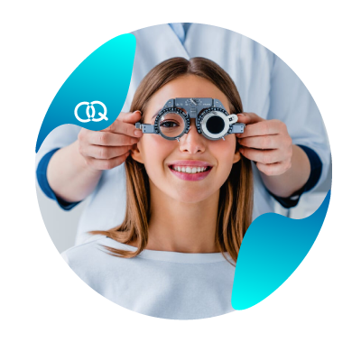

¡TU SALUD VISUAL ES PRIMERO!

La salud visual es fundamental porque los ojos procesan cerca del 80% de la información del entorno y constituyen el sentido más dominante para el desarrollo, la autonomía y la calidad de vida de las personas.